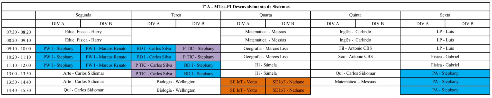
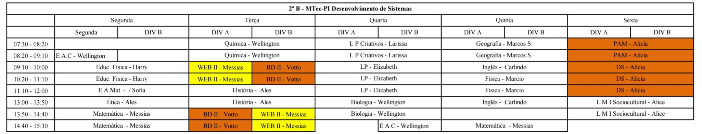
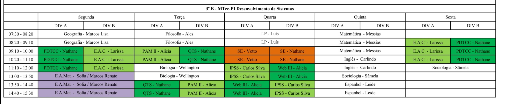
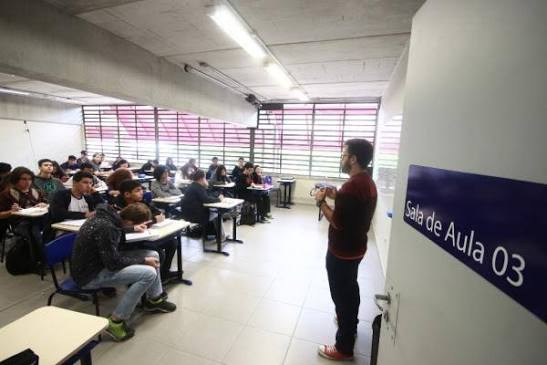

A Educação Na Escola Etec Taboão Da Serra




Defasagem de conhecimento da matéria comum pelos alunos
Na etec, a base curricular comum para os segundos e terceiros anos é diferente, por causa das aulas novas de E.A.C (estudos avançados em ciências), E.A.M. (estudos avançados em matemática), L. M. I. S (laboratório de mediação e intervenção sociocultural) e espanhol, que acabam tirando espaço de matérias importantes como quimica e fisica (que não tem no terceiro ano), filosofia (que não teve nem no segundo e nem no primeiro ano no 2° ano e 3° ano atual) e a retirada de algumas aulas em matemática e português no terceiro para adicionar aulas como o planejamento do tcc.
O que as notas em materias técnicas e de base comum significam pra sua vida?
Todas as matérias que existem na escola são importantes para retomar conteúdos ou realização de projetos, porém as que mais vão constar pra sua vida, tanto em cursinhos ou famosos vestibulares/vestibulinhos como o provão paulista seriado, são as da matéria comum, por isso é importante sempre assumir as suas prioridades, o recomendado é que você estude sempre matérias como filosofia, história, ciências, biologia, quimica, fisica, português, matematica, artes, geografia, todas da matéria comum acima das que contém a matéria técnica, como web, banco de dados, etc.